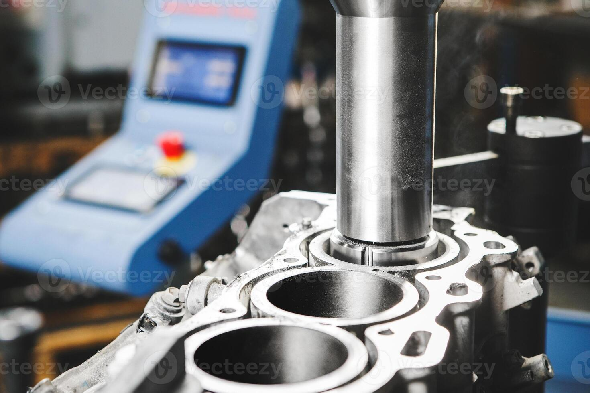
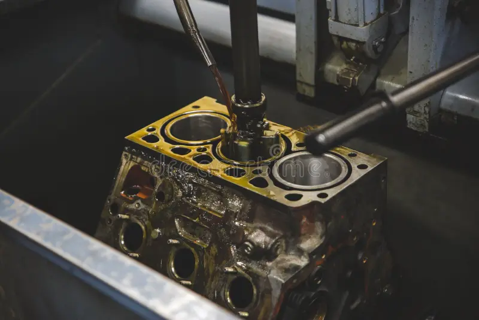
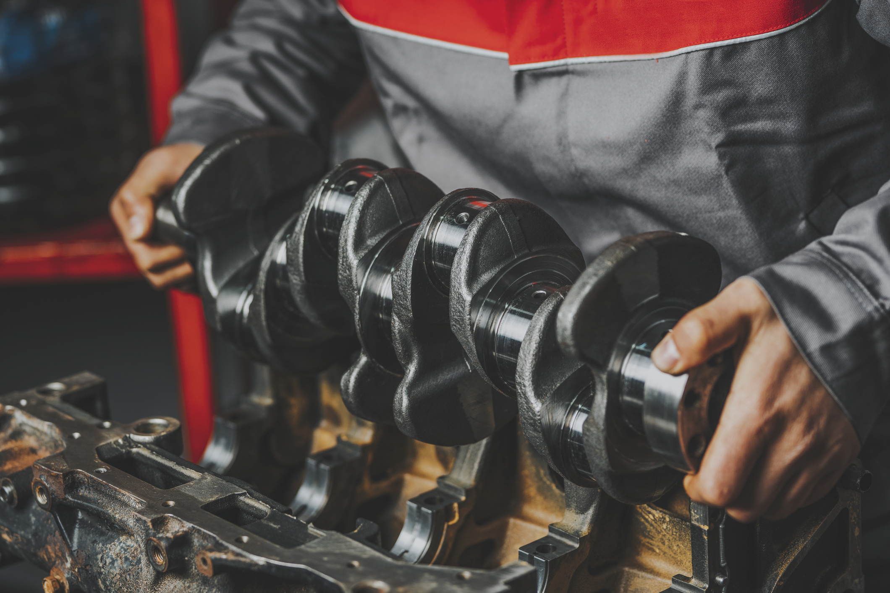
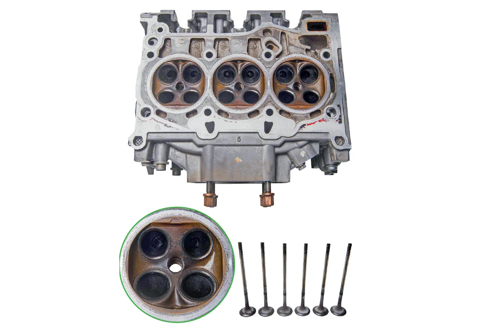
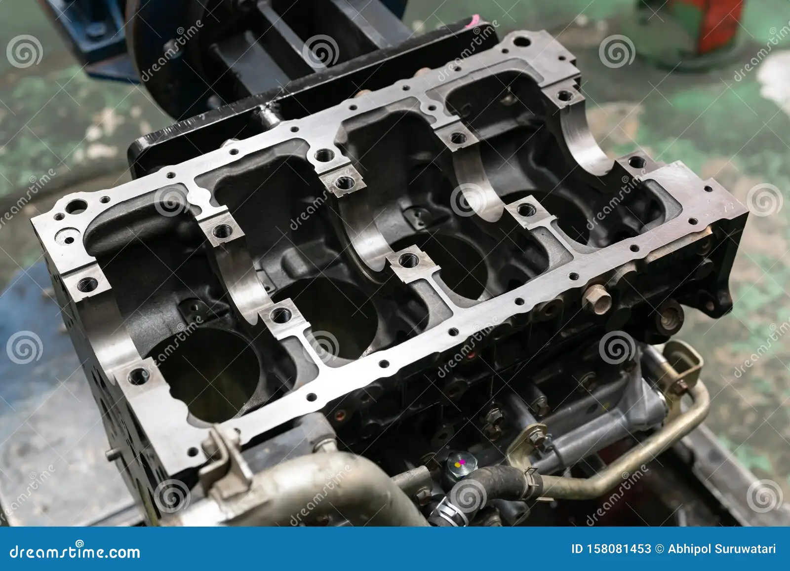
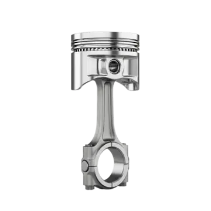
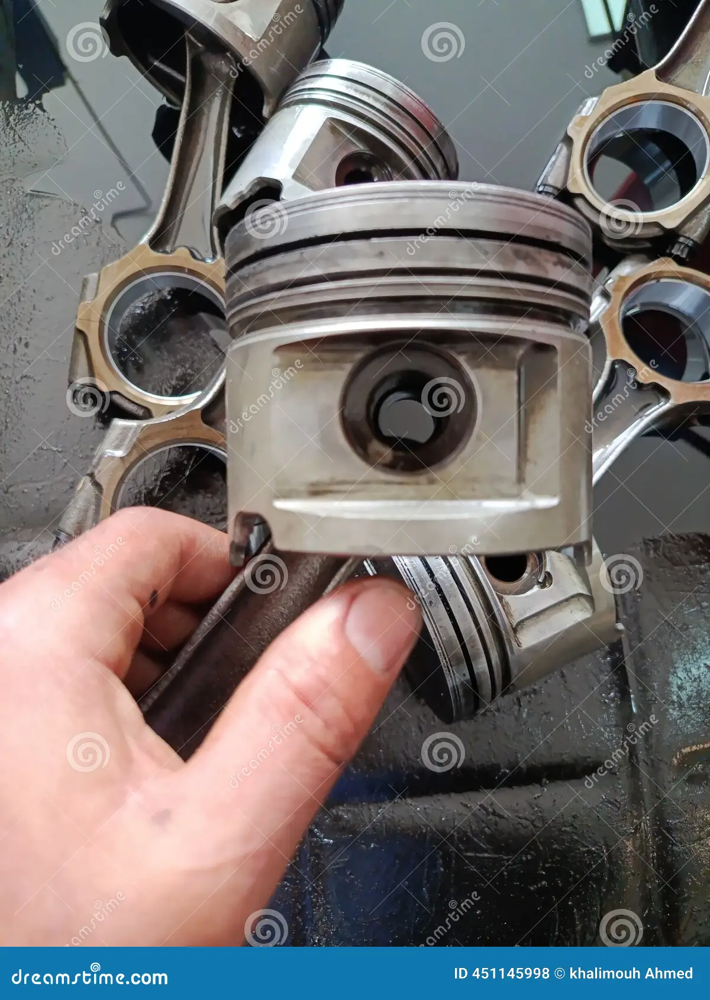
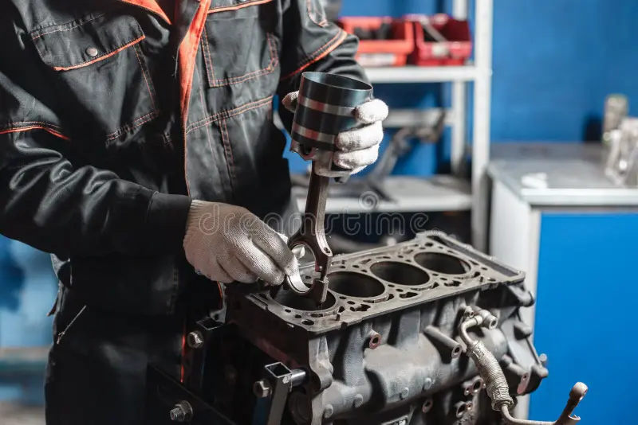

Bloco do motor
Retífica de bloco
Recuperação e usinagem do bloco para restabelecer suas medidas e condições de funcionamento.
- Componente
- Bloco
- Prazo
- Sob avaliação
Soluções para linha leve e pesada
Conheça os processos realizados pela FMS Motores para recuperar componentes e melhorar o funcionamento do motor.

Bloco do motor
Recuperação e usinagem do bloco para restabelecer suas medidas e condições de funcionamento.

Bloco do motor
Acabamento das paredes dos cilindros para favorecer a vedação e o assentamento dos anéis.

Virabrequim
Correção das superfícies de apoio para recuperar o alinhamento e reduzir vibrações.

Cabeçote
Recondicionamento do cabeçote para corrigir empenos, vedação e desgaste dos componentes.

Bloco do motor
Verificação e correção dos alojamentos para garantir o alinhamento dos mancais do motor.

Biela
Recuperação dimensional das bielas para restabelecer o encaixe e o movimento adequado.

Biela
Substituição e ajuste das buchas para recuperar a folga correta e a segurança do conjunto.

Montagem
Montagem técnica dos componentes seguindo medidas, sequência e especificações adequadas.